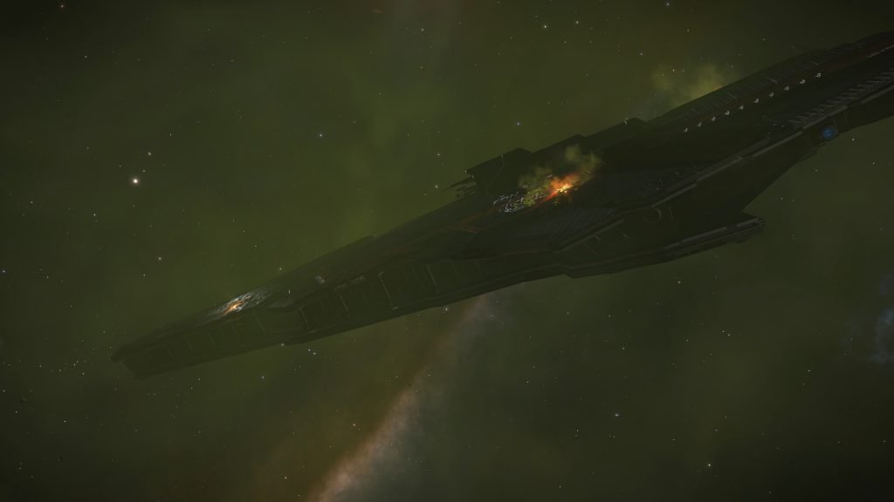

EXECUTIVE ORDER CONFIRMED.
SERVER PURGE SUCCESS.
SHIP ASSETS LIQUIDATED.
PAYLOAD LOST.
SHIP STATUS LOST.
A “Distress Call” signal source can be found in the Delphi system, orbiting body 6.
Delphi was previously known as Pleiades Sector IR-W d1-55.
The source of the distress call is the wreckage is a Federal Navy fleet consisting of a Farragut-class Battlecruiser and its escorts, including two Corvettes, destroyed by weapons consistent with Thargoid attacks, leaving green hull scarring and some kind of green gas throughout the area.

The Farragut contains a Private Data Beacon which provides a Thargoid Ship Signature when scanned.
There is also a sped up Morse transmission from the Farragut, that can be heard at the antenna array of the damaged ship. The transmission repeats approximately every 5 minutes.
To decode this transmission, first view as a spectrogram then slow down the transmission to approximately 10% of it's original speed. Something that looks like Morse Code should now appear, and be able to be decoded.
When decoded this transmission reads:
EXECUTIVE ORDER CONFIRMED.
SERVER PURGE SUCCESS.
SHIP ASSETS LIQUIDATED.
PAYLOAD LOST.
SHIP STATUS LOST.
This message is similar, but not the same, to another Morse transmission found at previous attacked capital ships in HIP 17044.